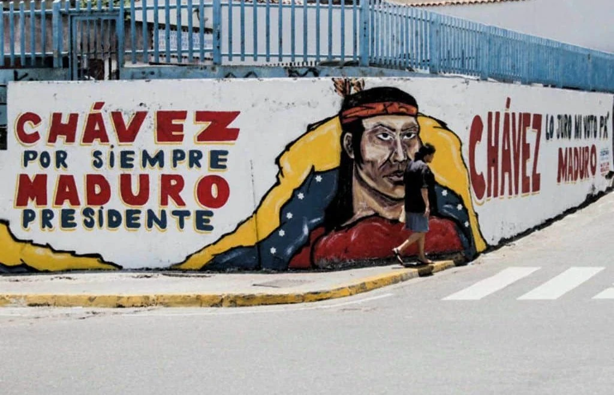

Venezuela Since the 1990s: Political Economy, State Power, and U.S. Intervention
A Stenography and Working Report - Aubrey Waddle

Stenography
Venezuela Since the 1990s: Political Economy, State Power, and U.S. Intervention
The Venezuelan crisis of the twenty-first century does not emerge from a vacuum; it is the cumulative result of a collapsing pre-1998 political order, oil dependence, class conflict, state restructuring, and sustained external pressure—most notably from the United States.
In the early 1990s, Venezuela’s Punto Fijo system—dominated by Acción Democrática (AD) and COPEI—entered terminal decline following the 1989 Caracazo uprising against IMF-backed austerity.[3] The second presidency of Rafael Caldera (1994–1999) responded to a banking collapse with partial neoliberal reforms under “Agenda Venezuela,” including privatization, deregulation, and fuel price hikes.[7] Politically, Caldera’s 1994 pardon of coup participants—most notably Hugo Chávez—opened the door for a populist rupture rather than a managed reform of the system.[2]
Chávez’s 1998 election marked a class realignment. His early project focused on institutional refoundation: the 1999 Constitution expanded executive authority, redefined property rights, and formalized participatory mechanisms while weakening traditional elite veto points.[4] Oil policy became central. The 2001 Hydrocarbons Law increased state take and reduced multinational autonomy, triggering elite backlash.[9] The April 2002 coup attempt—briefly successful before mass mobilization and loyalist military units restored Chávez—was tacitly welcomed by U.S. officials, while U.S.-funded democracy-promotion programs channeled millions into opposition civil society before and after the coup.[5][11]
Following the 2002–2003 PDVSA strike, Chávez consolidated state control over oil rents by purging management and redirecting revenues toward social “missions” targeting health, education, and food access.[13] These gains were real but structurally fragile, resting on high oil prices rather than diversified production. Currency and price controls introduced in 2003 attempted to manage capital flight and inflation but later entrenched import dependence and arbitrage opportunities.[6] U.S.–Venezuela relations hardened as Chávez aligned with Cuba, China, and Russia, framing Venezuelan policy in explicitly anti-imperialist terms.
After Chávez’s death in 2013, Nicolás Maduro inherited an oil-rent model just as global prices collapsed. Economic contraction, inflation, and shortages accelerated, while political legitimacy eroded following narrow electoral victories and opposition gains in the 2015 National Assembly.[1] U.S. policy escalated from rhetorical opposition to coercive economic measures. Executive Order 13692 (2015) initiated a sanctions framework that expanded dramatically after 2017, targeting financial markets, state debt, and eventually oil exports.[12]
The 2017 Constituent Assembly, convened by Maduro to bypass the opposition legislature, deepened authoritarian consolidation while further isolating Venezuela internationally.[8] In 2019, the U.S. recognized Juan Guaidó as interim president, transferring control of overseas assets and intensifying sanctions designed to force regime change.[10] Empirical studies link these sanctions to sharp declines in oil output and excess civilian mortality, compounding an already severe humanitarian crisis.[14]
From 2020 onward, Maduro adopted limited market pragmatism—informal dollarization, reduced price controls, selective privatization—while maintaining political repression. The 2023 Barbados Agreement briefly prompted U.S. sanctions relief tied to electoral commitments, but reversals followed amid disputes over opposition participation.[15] By the mid-2020s, Venezuela remained locked in a cycle of negotiated relief and renewed punishment, with sovereignty constrained by external leverage and internal authoritarian drift.
In sum, Venezuela’s trajectory since the 1990s reflects neither simple socialist failure nor singular imperial sabotage, but a dialectic: an oil-rent redistribution project colliding with class resistance, institutional over-centralization, and sustained U.S. intervention aimed at disciplining heterodox development. The result is not merely economic collapse, but the erosion of democratic capacity under conditions of permanent crisis.
References
- Corrales, Javier. 2020. Fixing Democracy: Constituent Assemblies and Authoritarianism. Oxford University Press.
- Corrales, Javier, and Michael Penfold. 2011. Dragon in the Tropics: Hugo Chávez and the Political Economy of Revolution in Venezuela. Brookings Institution Press.
- Ellner, Steve. 2008. Rethinking Venezuelan Politics: Class, Conflict, and the Chávez Phenomenon. Lynne Rienner.
- Ellner, Steve. 2012. “The Distinguishing Features of Latin America’s New Left.” Latin American Perspectives 39 (1).
- Golinger, Eva. 2006. The Chávez Code: Cracking U.S. Intervention in Venezuela. Olive Branch Press.
- Hausmann, Ricardo, and Francisco Rodríguez, eds. 2014. Venezuela Before Chávez. Penn State University Press.
- Hellinger, Daniel. 2004. “Political Overview: The Breakdown of Puntofijismo.” In Venezuelan Politics in the Chávez Era.
- Human Rights Watch. 2018. Crackdown on Dissent: Brutality, Torture, and Political Persecution in Venezuela.
- Mommer, Bernard. 2003. “Subversive Oil.” Oxford Institute for Energy Studies.
- Smilde, David. 2020. “Sanctions and Venezuela’s Political Stalemate.” Washington Office on Latin America.
- U.S. Government Accountability Office (GAO). 2006. U.S. Democracy Assistance for Venezuela.
- U.S. Treasury Department. 2019. Venezuela-Related Sanctions.
- Weisbrot, Mark, Luis Sandoval, and David Rosnick. 2009. The Chávez Administration at 10 Years. Center for Economic and Policy Research.
- Weisbrot, Mark, and Jeffrey Sachs. 2019. Economic Sanctions as Collective Punishment: The Case of Venezuela. CEPR.
- Reuters. 2024. “U.S. Reimposes Venezuela Oil Sanctions After Election Disputes.”
Working Report and Opinion
Venezuela, Sanctions, and the Myth of “Liberation”
"If you ever feel useless, remember it took 20 years, trillions of dollars and 4 US Presidents to replace the Taliban with the Taliban." - Norman Finkelstein
This is not an argument about having perfect leaders. Nicolás Maduro is not perfect—no serious person claims he is. In the same way, acknowledging that Saddam Hussein opposed U.S. imperialism does not require pretending he was a good or just leader. Anti-imperialism is not an endorsement of authoritarianism; it is a recognition of power, history, and material consequences.
Maduro may well be unpopular among Venezuelans, but to the extent that this is true, it is critical to understand why. There are two primary factors driving popular dissatisfaction. First, many Venezuelans understandably—but incorrectly—attribute their economic hardship directly to Maduro’s governance, when in reality a substantial portion of that suffering is the result of U.S. sanctions deliberately imposed to strangle the Venezuelan economy. These sanctions are not abstract policy tools; they are collective punishment, and Maduro is governing under conditions of economic siege.
Second, there is the role of the Venezuelan opposition—an opposition that is not organic, independent, or self-sustaining. It is heavily backed, financed, and politically shaped by the United States and its allies. Without sanctions and external pressure, the opposition’s message would not resonate broadly. Venezuelans know this. In a neutral environment, any relatively nationalist, secular, anti-imperialist government—whether led by Maduro or someone else—would likely remain more popular than a Western-aligned alternative. Nationalism and isolation from the West may not be ideal values, but they are vastly preferable to the historical alternative.
And the alternative is well documented.
The Pattern of Imperial Intervention
We have decades of precedent for what happens when the United States intervenes to remove governments it deems hostile. The result is either a hard coup, a soft coup, or the creation of a power vacuum—each of which reliably produces catastrophe. A Western-friendly regime is installed, or chaos is allowed to flourish, and the country is opened up for exploitation.
Libya is a textbook example. Whatever one thinks of Muammar Gaddafi—and he had real authoritarian tendencies—Libya today is objectively worse by every meaningful measure. Those who once celebrated his removal would almost certainly tell you now that life under Gaddafi was infinitely better than living in a collapsed state with open-air slave markets. Had Libya remained under Gaddafi, or transitioned peacefully to a similar leadership after his retirement, it would not resemble the shattered country it is today.
The same logic applies elsewhere. Iraq. Afghanistan. Guatemala. Each would be better off without U.S. intervention. This is not speculative; it is historical fact.
This is the uncomfortable reality behind the so-called “lesser of two evils” argument. Maduro is not great—but lifting sanctions and allowing Venezuela to determine its own political future is unquestionably better than regime change followed by mass suffering. Deposing a government and then immiserating the population is not a moral alternative.
Misunderstanding American Power
To understand this issue fully, one must first understand what the United States actually is. It is the largest empire in human history—not the most moral, not the most benevolent, but the most powerful. It is, quite simply, the Death Star of global politics.
This level of dominance is not accidental. It requires the constant subjugation of countries like Venezuela and the removal of leaders who resist U.S. economic control—whether Chávez, Maduro, Árbenz, Gaddafi, or countless others. This reality is widely misunderstood across the American political spectrum.
Liberals often cling to the fantasy that U.S. interventions are about removing “bad dictators” and spreading democracy, a claim thoroughly disproven by over a century of evidence. Neoconservatives are more honest: they largely recognize that intervention is about resource extraction and maintaining global dominance, even if they occasionally gesture toward moral justifications. And then there is the so-called “America First” nationalist right, which imagines that the United States can withdraw from the world while somehow preserving its extraordinary material abundance.
This is a profound contradiction. The living standards enjoyed in the United States are inseparable from imperial extraction. Wealth flows inward from Venezuela, Guatemala, Bolivia, Colombia, Libya, Iraq, Afghanistan, Yemen, and across Southeast Asia. Empire is not an accident—it is the foundation.
A Leftist Alternative
The leftist path forward is not isolationism, nor is it moral posturing. It is a fundamental restructuring of how the United States engages with the global South. Instead of coercion, coups, and sanctions, U.S. foreign policy should resemble something closer to a mutual development model—similar to China’s Belt and Road approach—centered on voluntary partnerships rather than domination.
This would mean accepting that some countries will refuse engagement, and respecting that choice. It would likely make the United States poorer in the short term. That is the cost of acting as a moral actor rather than an imperial enforcer.
This is precisely why China is gaining influence. Global South countries understand that partnering with the United States often means exploitation, instability, and the threat of regime change. China is capitalizing on that understanding by offering an alternative: economic cooperation without coups, sanctions, or bombs. No kidnapping of leaders. No “humanitarian” wars. No terror campaigns disguised as democracy promotion.
That contrast is not lost on the world.
And until Americans confront the reality of their empire—rather than clinging to comforting myths—the cycle of intervention, collapse, and denial will continue.